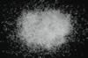

|
|
(For further information on spectroscopy, see:
http://speclab.cr.usgs.gov)
TITLE: Datolite HS442 DESCRIPT
DOCUMENTATION_FORMAT: MINERAL
SAMPLE_ID: HS442
MINERAL_TYPE: Nesosilicate
MINERAL: Datolite
FORMULA: CaBSiO4(OH)
FORMULA_HTML: CaBSiO4(OH)
COLLECTION_LOCALITY: Connecticut
ORIGINAL_DONOR: Hunt and Salisbury Collection
CURRENT_SAMPLE_LOCATION: USGS Denver Spectroscopy Laboratory
ULTIMATE_SAMPLE_LOCATION: USGS Denver Spectroscopy Laboratory
SAMPLE_DESCRIPTION:
"N-15 Datolite 442B--Conn. CaB(SiO4)(OH): Datolite is typical of a mineral of secondary origin found in cavities in basaltic lavas and similar rocks. Its spectrum is completely dominated by well-resolved features near 1.02 µ , 1.26 µ, 1.48 µ, 1.74 µ, and 1.80 µ as well as multiple bands between 2.1 and 2.5 µ. The overall appearance of this spectrum from 0.6 to 1.85 µ is essentially identical with that of gypsum (see Part IV, p. 7-8, spectra SS 11-A through D) including the unusual 1.7 µ feature, although all the features in datolite are shifted slightly to longer wavelengths from the corresponding positions in gypsum. However, in datolite the intense 1.9 µ feature, indicative of the presence of molecular water is completely absent, and yet the spectrum of gypsum is explained entirely in terms of its molecular water of crystallization, with the 1.7 µ feature involving librational modes of water. It would seem therefore, in the absence of water that the bands short of 1.85 µ in datolite must be due to combination modes of at least two different types of OH stretching vibrations. The bands between 2.1 and 2.5 µ can be explained in terms of combination of these OH stretching modes with lattice modes with additional contributions from carbonate vibrations (due to calcite, which is present as an impurity) and possibly from combinations involving the boron-oxygen stretching modes (see Part V, p. 130-131, spectra B-1 through B-4)."
Hunt, G.R., J.W. Salisbury, and C.J. Lenhoff, 1973, Visible and near-infrared spectra of minerals and rocks: VI. Additional silicates. Modern Geology, v. 4, p. 85-106.
IMAGE_OF_SAMPLE:

END_SAMPLE_DESCRIPTION.
XRD_ANALYSIS:
Pure datolite (Norma Vergo).
END_XRD_ANALYSIS.
COMPOSITIONAL_ANALYSIS_TYPE: None # XRF, EM(WDS), ICP(Trace), WChem
COMPOSITION_TRACE: None
COMPOSITION_DISCUSSION:
None
END_COMPOSITION_DISCUSSION.
MICROSCOPIC_EXAMINATION:
Mode:
98 - 99 vol% Datolite
1 - 2 vol% Calcite
trace opaques
Biaxial (-), lacks cleavage, conchoidal fracture. All consistent with datolite. Sample should be washed with HCl to remove carbonate. G. Swayze.
END_MICROSCOPIC_EXAMINATION.
SPECTROSCOPIC_DISCUSSION:
END_SPECTROSCOPIC_DISCUSSION.
SPECTRAL_PURITY: 1b2b3b4b # 1= 0.2-3, 2= 1.5-6, 3= 6-25, 4= 20-150 microns
| LIB_SPECTRA_HED: | where | Wave Range | Av_Rs_Pwr | Comment |
|---|---|---|---|---|
| LIB_SPECTRA: | splib04a r 1333 | 0.2-3.0µm | 200 | g.s.= 266 µm |
| LIB_SPECTRA: | splib05a r 2307 | 0.2-3.0µm | 200 | g.s.= |
| LIB_SPECTRA: | splib06a r 6695 | g.s.= | ||
| LIB_SPECTRA: | splib06a r 6709 | g.s.= |
{kind=link}